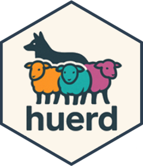
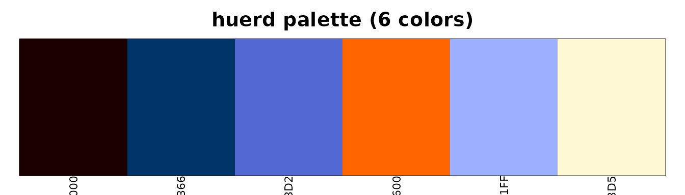
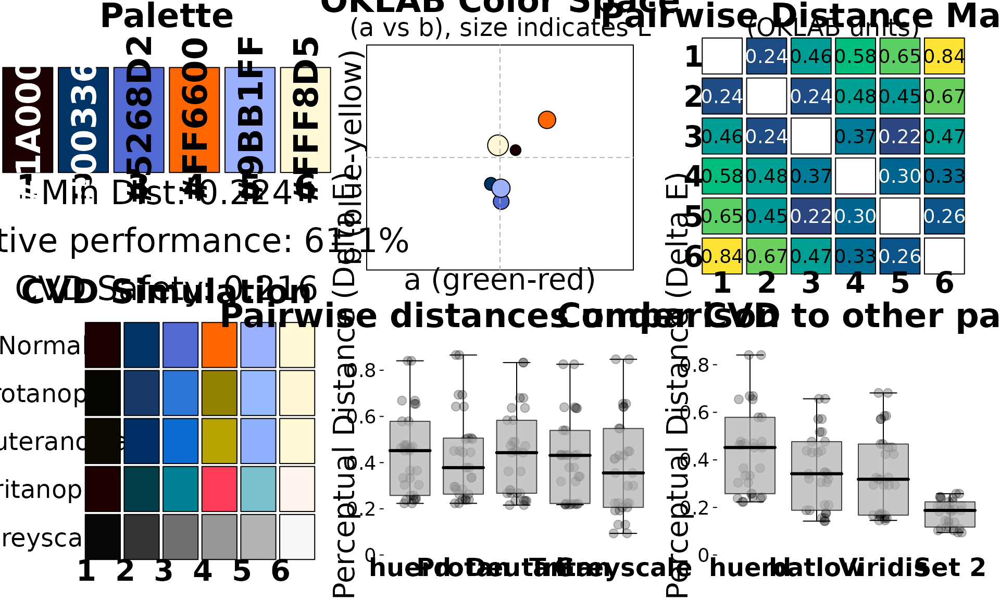
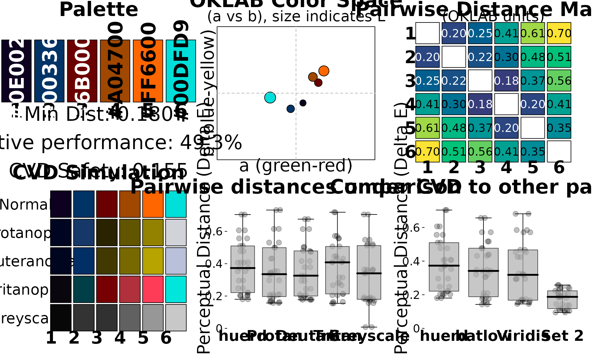

Workflow: Designer Creating Brand-Compliant Palettes
Source:vignettes/designer-workflow.Rmd
designer-workflow.RmdThe Scenario
You’re a designer creating a color palette for a client’s annual report. Your requirements are:
- Include specific brand colors that the client requires
- Generate complementary colors that work with the brand
- Ensure accessibility for compliance requirements
- Export to multiple formats (CSS, Sass, etc.)
- Document and justify your color choices
This vignette shows how huerd simplifies brand-compliant palette creation.
Starting with Brand Colors
Use brand_palette() when you have specific colors that
must be included:
library(huerd)
# Client's brand colors
client_navy <- "#003366"
client_orange <- "#FF6600"
# Create a 6-color palette around the brand
palette <- brand_palette(
brand_colors = c(client_navy, client_orange),
n_total = 6
)
print(palette)
#>
#> -- huerd Color Palette (6 colors) --
#> Colors:
#> [ 1] #1A0000
#> [ 2] #003366
#> [ 3] #5268D2
#> [ 4] #FF6600
#> [ 5] #9BB1FF
#> [ 6] #FFF8D5
#>
#> -- Quality Metrics Summary --
#> * Min. Perceptual Distance (OKLAB): 0.224
#> * Optimizer Performance Ratio : 61.1%
#> * Min. CVD-Safe Distance (OKLAB) : 0.216
#>
#> -- Generation Details --
#> * Optimizer Iterations: 265
#> * Optimizer Status: NLOPT_XTOL_REACHED: Optimization stopped because xtol_rel or xtol_abs (above) was reached.The brand colors are preserved exactly, and huerd generates optimized complementary colors.
Visualizing Your Palette
See your palette at a glance:
plot(palette)
For client presentations, use the full analysis dashboard:
plot_palette_analysis(palette)
Controlling Lightness for Print
For print materials, you may want to avoid very light or very dark colors:
# Mid-range lightness for better print reproduction
print_palette <- quick_palette(
n = 6,
brand_colors = c(client_navy, client_orange),
lightness = "mid" # Avoids extremes
)
print(print_palette)
#>
#> -- huerd Color Palette (6 colors) --
#> Colors:
#> [ 1] #210000
#> [ 2] #003366
#> [ 3] #AB54FF
#> [ 4] #FF6600
#> [ 5] #7EC6FF
#> [ 6] #FFDC87
#>
#> -- Quality Metrics Summary --
#> * Min. Perceptual Distance (OKLAB): 0.228
#> * Optimizer Performance Ratio : 62.4%
#> * Min. CVD-Safe Distance (OKLAB) : 0.204
#>
#> -- Generation Details --
#> * Optimizer Iterations: 524
#> * Optimizer Status: NLOPT_XTOL_REACHED: Optimization stopped because xtol_rel or xtol_abs (above) was reached.Or specify custom bounds:
# Very specific lightness range
controlled_palette <- generate_palette(
n = 6,
include_colors = c(client_navy, client_orange),
init_lightness_bounds = c(0.3, 0.7), # 30% to 70% lightness
progress = FALSE
)Documenting for Stakeholders
Human-Readable Quality Assessment
quality <- interpret_palette_quality(palette)
print(quality)
#>
#> ── Palette Quality Assessment ──
#>
#> This 6-color palette is highly optimized (61% of theoretical maximum).
#> Excellent - colors are highly distinct and easy to differentiate
#>
#> ── Distinctness
#> Excellent - colors are highly distinct and easy to differentiate
#>
#> ── Accessibility
#> Excellent - palette is safe for most color vision deficienciesThis gives you language you can use directly in client presentations.
Technical Metrics
For detailed documentation:
evaluation <- evaluate_palette(palette)
cat("=== Palette Quality Report ===\n\n")
#> === Palette Quality Report ===
cat("Number of colors:", evaluation$n_colors, "\n")
#> Number of colors: 6
cat("Minimum perceptual distance:", round(evaluation$distances$min, 3), "\n")
#> Minimum perceptual distance: 0.224
cat("Mean perceptual distance:", round(evaluation$distances$mean, 3), "\n")
#> Mean perceptual distance: 0.438
cat("Optimization performance:", round(evaluation$distances$performance_ratio * 100, 1), "%\n")
#> Optimization performance: 61.1 %
cat("\n=== Accessibility ===\n")
#>
#> === Accessibility ===
cat("CVD worst-case distance:", round(evaluation$cvd_safety$worst_case_min_distance, 3), "\n")
#> CVD worst-case distance: 0.216
cat("CVD-safe:", is_cvd_safe(palette), "\n")
#> CVD-safe: TRUECVD Simulation for Compliance
Show stakeholders how the palette appears to colorblind viewers:
cvd_sim <- simulate_palette_cvd(palette, cvd_type = "all")
print(cvd_sim)
#>
#> -- huerd CVD Simulation Result (Multiple Types, Severity: 1.00) --
#> Palette for: original
#> [ 1] #1A0000
#> [ 2] #003366
#> [ 3] #5268D2
#> [ 4] #FF6600
#> [ 5] #9BB1FF
#> [ 6] #FFF8D5
#> Palette for: protan
#> [ 1] #050400
#> [ 2] #153868
#> [ 3] #2D76D6
#> [ 4] #938100
#> [ 5] #97B9FF
#> [ 6] #FFF6D3
#> Palette for: deutan
#> [ 1] #0C0A00
#> [ 2] #002F65
#> [ 3] #0B6BD0
#> [ 4] #B8A400
#> [ 5] #8EB0FD
#> [ 6] #FFF8D6
#> Palette for: tritan
#> [ 1] #1E0000
#> [ 2] #003F47
#> [ 3] #008093
#> [ 4] #FF3C58
#> [ 5] #7BC1CD
#> [ 6] #FFF3EEExporting Your Palette
huerd can export to multiple formats for development handoff:
CSS Custom Properties
css_output <- export_palette(
palette,
format = "css",
names = c("brand-navy", "brand-orange", "accent-1", "accent-2", "accent-3", "accent-4")
)
cat(css_output)
#> :root {
#> --brand-navy: #1A0000;
#> --brand-orange: #003366;
#> --accent-1: #5268D2;
#> --accent-2: #FF6600;
#> --accent-3: #9BB1FF;
#> --accent-4: #FFF8D5;
#> }Sass Variables
sass_output <- export_palette(
palette,
format = "sass",
names = c("brand-navy", "brand-orange", "accent-1", "accent-2", "accent-3", "accent-4")
)
cat(sass_output)
#> $brand-navy: #1A0000;
#> $brand-orange: #003366;
#> $accent-1: #5268D2;
#> $accent-2: #FF6600;
#> $accent-3: #9BB1FF;
#> $accent-4: #FFF8D5;JSON for Web Applications
json_output <- export_palette(palette, format = "json")
cat(json_output)
#> {
#> "color_1": "#1A0000",
#> "color_2": "#003366",
#> "color_3": "#5268D2",
#> "color_4": "#FF6600",
#> "color_5": "#9BB1FF",
#> "color_6": "#FFF8D5"
#> }Save to Files
# Export directly to files
export_palette(palette, format = "css", file = "brand-colors.css")
export_palette(palette, format = "sass", file = "_brand-colors.scss")
export_palette(palette, format = "json", file = "brand-colors.json")Reproducibility for Version Control
Every palette includes metadata for exact reproduction:
# Original palette
original <- generate_palette(
n = 6,
include_colors = c(client_navy, client_orange),
progress = FALSE
)
# Reproduce exactly (e.g., in a different session)
reproduced <- reproduce_palette(original, progress = FALSE)
# Verify they're identical
identical(as.character(original), as.character(reproduced))
#> [1] TRUEComplete Design Workflow Example
# 1. Define brand colors
brand_colors <- c("#003366", "#FF6600")
# 2. Generate palette
final_palette <- brand_palette(brand_colors, n_total = 6)
# 3. Verify quality
quality_report <- interpret_palette_quality(final_palette)
print(quality_report)
#>
#> ── Palette Quality Assessment ──
#>
#> This 6-color palette is well optimized (49% of theoretical maximum). Excellent
#> - colors are highly distinct and easy to differentiate
#>
#> ── Distinctness
#> Excellent - colors are highly distinct and easy to differentiate
#>
#> ── Accessibility
#> Excellent - palette is safe for most color vision deficiencies
# 4. Check accessibility
cat("\nAccessibility Check:", if(is_cvd_safe(final_palette)) "PASS" else "REVIEW NEEDED", "\n")
#>
#> Accessibility Check: PASS
# 5. Visual review
plot_palette_analysis(final_palette)
# 6. Export for development
cat("\n=== CSS Export ===\n")
#>
#> === CSS Export ===
cat(export_palette(final_palette, format = "css",
names = c("primary", "secondary", "accent1", "accent2", "accent3", "accent4")))
#> :root {
#> --primary: #0E0020;
#> --secondary: #003366;
#> --accent1: #6B0000;
#> --accent2: #A04700;
#> --accent3: #FF6600;
#> --accent4: #00DFD9;
#> }Summary
For designers, huerd provides:
-
brand_palette()- Start with your required brand colors -
quick_palette(lightness = ...)- Control lightness for print/digital -
interpret_palette_quality()- Client-ready quality language -
simulate_palette_cvd()- Accessibility documentation -
export_palette()- CSS, Sass, JSON, CSV exports -
reproduce_palette()- Exact reproducibility for version control
This workflow ensures your brand palettes are optimized, accessible, and properly documented.